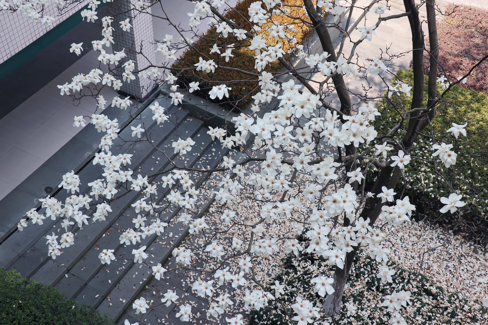
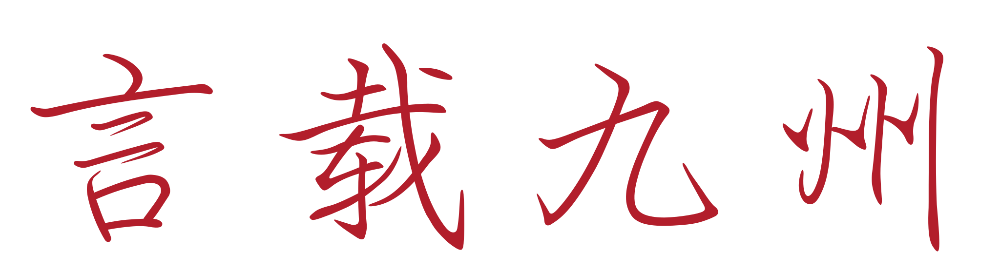
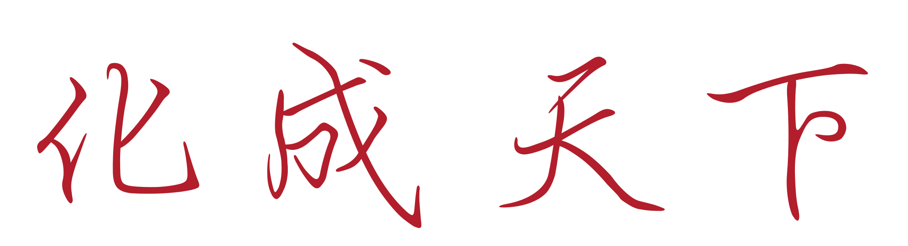
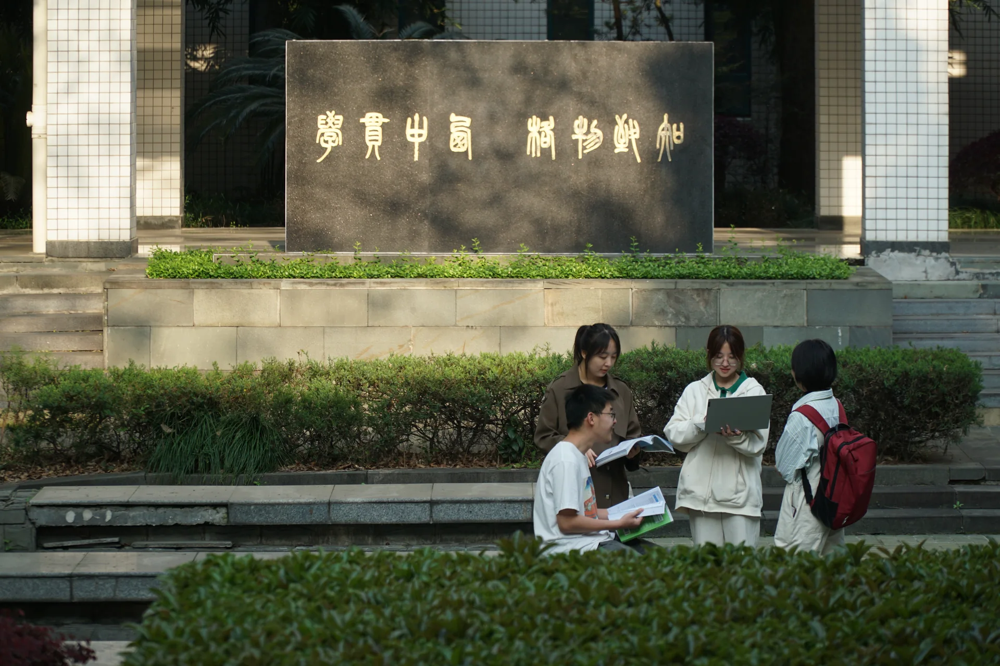
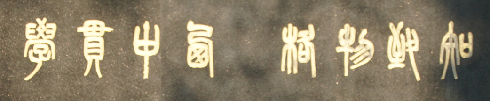
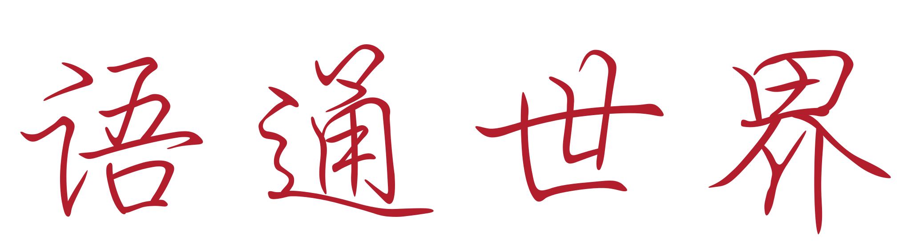

ZHEJIANG UNIVERSITY · SCHOOL OF INTERNATIONAL STUDIES
求是文脉 · 外院新章
语通世界
文传未来
以语言连接世界，以人文照见未来。
在浙大外院，与多元文明相遇。

·
01 / 04
NEWS & STORIES外院新闻学院动态
更多＋

RESEARCH & IDEAS思想，向新学术动态
更多＋ACADEMIC DIALOGUES与思想相遇学术交流
精选讲座文学研究 / 语言与翻译 / 跨学科对话左右滑动 · 点击查看完整海报
LEARNING & GROWTH学以致远教育教学
STUDENT LIFE青春，正当时学子风采
更多＋GLOBAL ENGAGEMENT世界，在此交汇国际交流
SPECIAL FEATURES文脉，绵长专题系列

学贯中西 · 格物致知